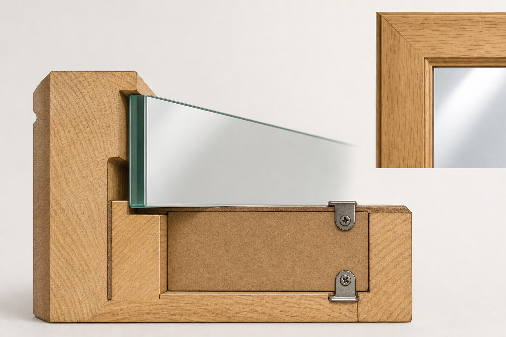

Key Idea
Glass and mirror fitting require support, protection and supervision.
The frame may use a rebate to support the mirror. A backing board, clips, points or beading can hold the mirror in place depending on the design and teacher instructions.
Theory Topic
Safe fitting, rebates, backing, hanging and final checks.
Theory Block 8
The mirror needs to be fitted safely and held securely without damaging the frame or glass.
Glass and mirror fitting require support, protection and supervision.
The frame may use a rebate to support the mirror. A backing board, clips, points or beading can hold the mirror in place depending on the design and teacher instructions.
The mirror must be held securely without pressure points that could chip the glass or loosen over time.
Mirror fitting happens after the frame has been assembled, finished and checked. The frame should not be forced around the mirror. The mirror should sit neatly in the rebate with support from the frame and backing system.
Before the mirror is handled, clear the bench of tools, screws and offcuts. Use a clean, flat, padded surface and follow the teacher’s handling directions. Mirror glass can chip, crack or break if it is twisted, dropped or put under uneven pressure.
Check the rebate for dust, sharp fibres, glue lumps or other debris. The mirror should sit evenly, not rock, and not need to be forced into the frame.
| Method | Purpose | Risk If Done Poorly |
|---|---|---|
| Rebate | Creates a ledge for the mirror or backing board to sit in. | Too shallow can leave the mirror proud; too loose can allow movement. |
| Backing board | Supports and protects the back of the mirror. | Rough edges or poor fixing can scratch or loosen the mirror. |
| Clips or points | Hold the mirror in place without covering much of the frame. | Too much pressure can chip glass or create stress points. |
| Hanging hardware | Allows the mirror to be mounted safely. | Off-centre or weak fixing can make the mirror hang badly or fall. |
How the parts work together
The rebate supports the glass, while the backing and retaining method hold it in place. Follow the approved project method and avoid creating pressure points on the mirror edge.

Do not treat glass fitting as a quick last job. Check sharp edges, loose hardware, pressure points and whether the frame can carry the mirror safely. Confirm that the retaining method is secure without over-tightening, that hanging hardware is centred and suitable, and that the project can be moved safely before it leaves the bench.
Answer the Quick Check, then return to the theory menu when you are ready for another topic.